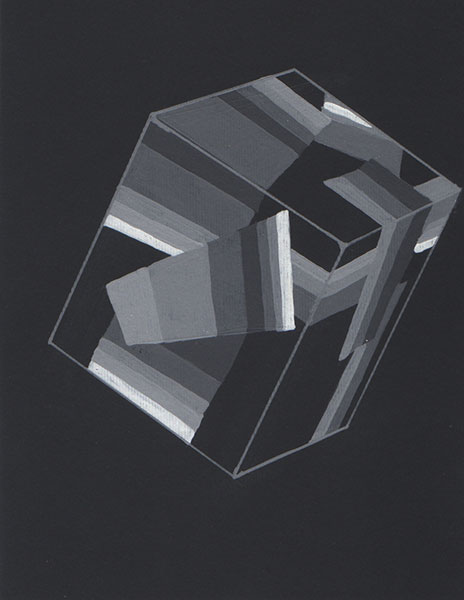
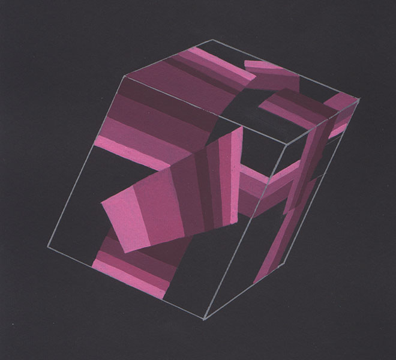
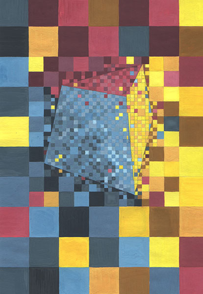
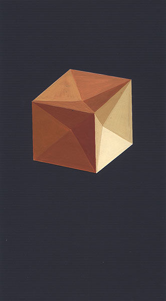
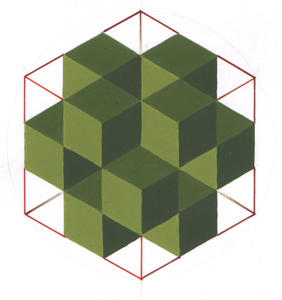
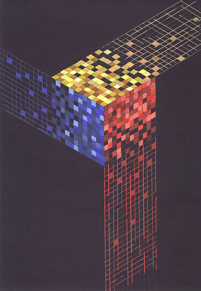

Задача: При помощи цвета на объемной форме создать различные эффекты. Выявить геометрические особенности формы.
- Разрушить её,
- Ритмизировать,
- Деформировать,
- Преодолеть геометризм,
- Выявить каркас крнструкции,
- Связать с окружающими поверхностями,
- Придать динамизм,
- Создать иллюзию тяжести или легкости,
- Выразить эмоциональные ассоциации (как сверхзадача).
- Ритмизировать,
Авторы работ: Сныткина Т., Пастушенко П., Новикова Ю.
Просмотр 31 января 2005

Куб (разрушение формы)

Куб (разрушение формы)

Единство формы и пространства

Куб жмурится от удовольствия

Внешнее и внутреннее

Триединство